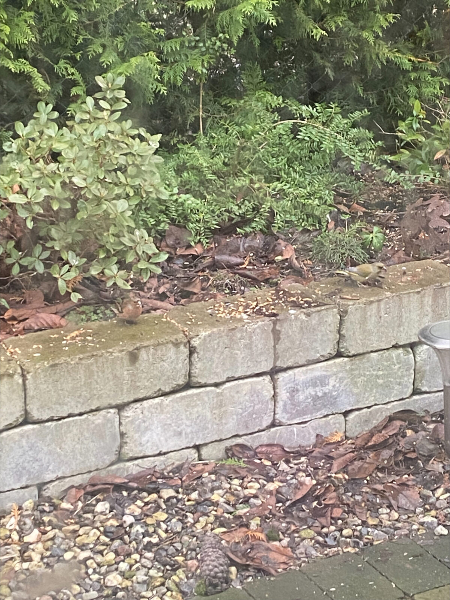
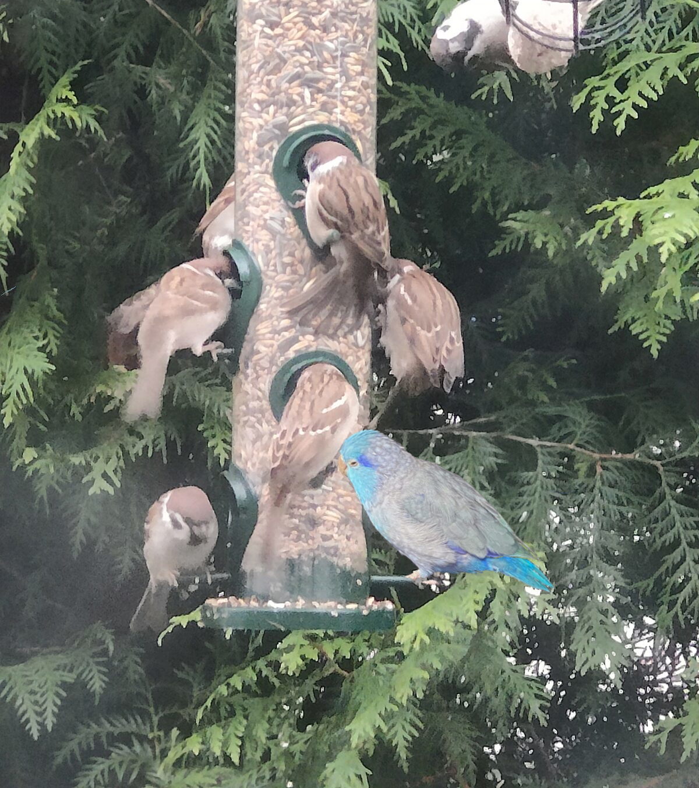
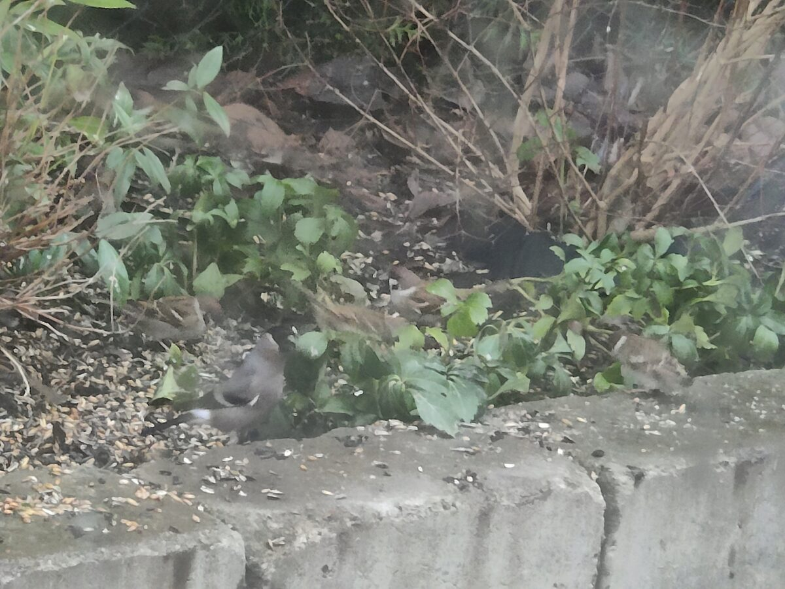
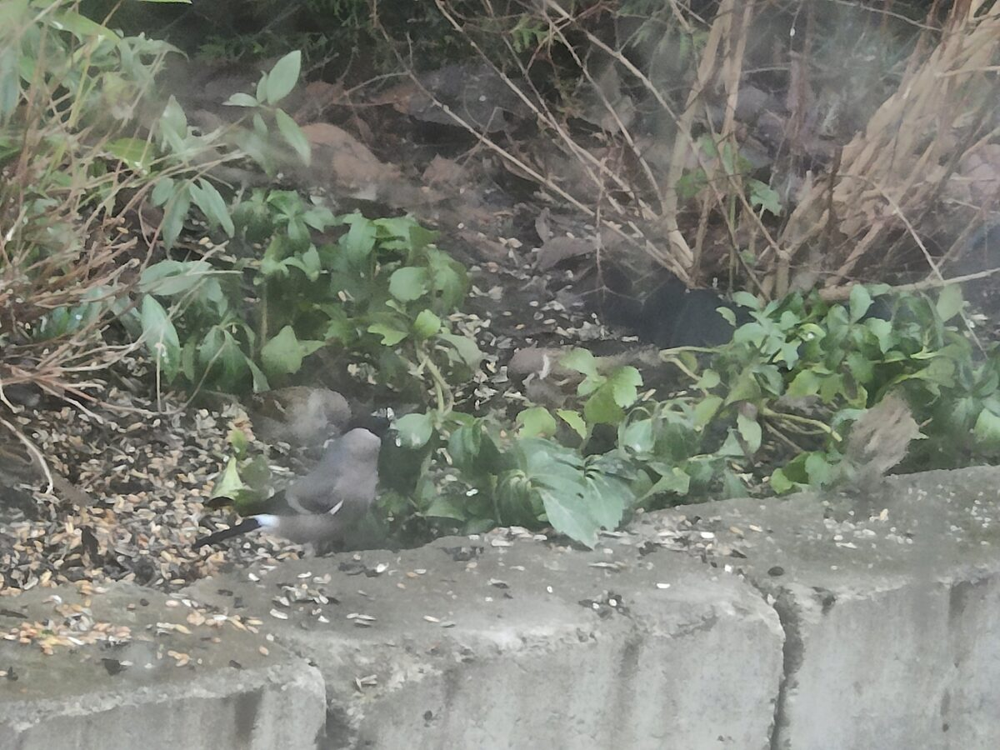
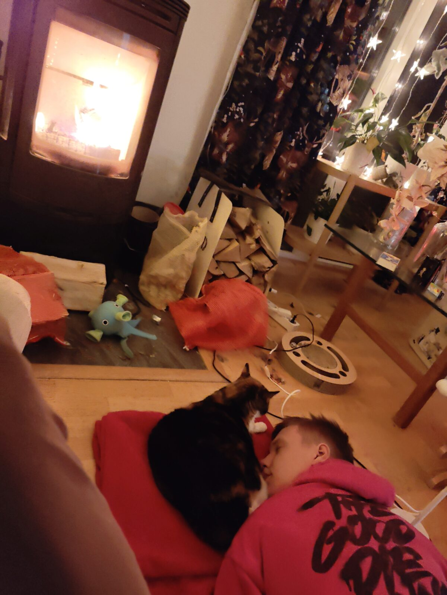

Rudolf har klurat på den och tror det
är någon udda sjukdom eller nåt?
Kanske renskav?
Ha en bra lördag!
Bofink och Grönfink
och Stillahavssparvpapegoja?
Domherre
Det är fyra fåglar på denna och fem på förra
En ny gåta
Den som har det är fattig,
den som saknar det är rik.
Den som vet det är dum,
den som gör det är lat.
Den som hör det är döv,
den som ser det är blind?
Rudolf har klurat på den och tror det
är någon udda sjukdom eller nåt?
Kanske renskav?
Bastian myser med Ozzie framför brasan
